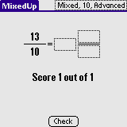
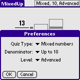

MixedUp is a simple learning tool. In MixedUp you must convert fractions to mixed numbers or vice versa. For each correct conversion you score 1 point.
Installation of MixedUp is like installing any other Palm OS program:
When the synchronization is done you will have a 'MixedUp' icon in the Unfiled category on your Palm PDA. Feel free to move MixedUp to another category.
Depending on the quiz type you have to fill in blanks on either side of the equal sign. In the screen shot shown you have to reduce 13 / 10 to mixed numbers (1 3/10). Sometimes the fraction is not properly reduced ... Enter your answer in the boxes and then tap Check to check your answer.
By tapping the text in the upper right corner you bring up the preferences dialog. The Quiz Type can be either Fractions or Mixed numbers. When selecting Fractions you have to convert a mixed number to a fraction. When selection Mixed numbers you have to convert a (perhaps unreduced) fraction to a mixed number. The Denominator specifies the magnitude of the reduced version of a fraction or mixed number. By setting the Level to Beginner you only have to enter one number. On the Advanced level you have to enter all numbers for the particular quiz.